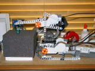
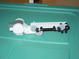
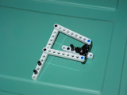
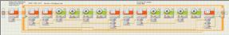

A robot that will stack a tower of dice. 
Original plan was to have the arm carry all of the dice with it and place them. Similar to an applicator tip in a machine like RepRap. Played with a lot of ideas, but they all ended up either using too many parts, or being too heavy, or usually, both. So I changed my plan to work more like a Pick-n-Place, which makes it just a claw. Then needed to make a small claw that would sufficiently grab dice and carry them. 
What I came up with works well enough. There is however a bit of slack from the totaled gap space of all the gears between the pincers and the motor. I’ve been able to deal with it so far just by keeping it in mind while writing programs. (mostly by putting in enough extra degrees.) Though I’m curious if there is a design that will work with less floating space.
The other challenge was that to stack dice I needed to have near, if not complete, vertical motion of the claw tip. Otherwise the dice wouldn’t be placed on top of each other and the tower would fall. Also would be nice to have lots of vertical range. After messing around with lots of unusable ideas, then scouring the web, I came across a model of a skid-loader. Which had the linkages for the near vertical motion I was after. So copied and tweaked it, and built it in. 
I would also have liked to get near horizontal motion as well, but I was getting impatient here. So just used the base from the RoboArm T-56 that came with the NXT. This works well enough, although due to the way it is built, turning the arm also raises or lowers the tip a bit. After a bit of testing, I figured that about four seconds of rotation equaled about one rotation of lift. Also, rotating right produced lift, while rotating left lowers the tip.
After many trials and errors, I came up with a program that worked for a tower of two dice. Then after a bunch more runs, I got one captured in quicktime. There is a lot of float in the system, which would be less noticeable if I had bigger dice. (They’re 7/16 of an inch to a side.) So accuracy is a bit of luck and repetition.
The program: 
Update 2007-06-28T18:01:01-05:00: Improved the program to work with towers of different heights. You still need to edit the program to tell it how high the tower is, but there is only one spot where you need to do that.
Update 2007-06-29T18:11:56-05:00: Changed the pincer design to use the lever idea instead of gears. Nearly no float in this design; works much better than with gears. I don’t have to do any compensation in the code for the pincers now.
{kind=link}